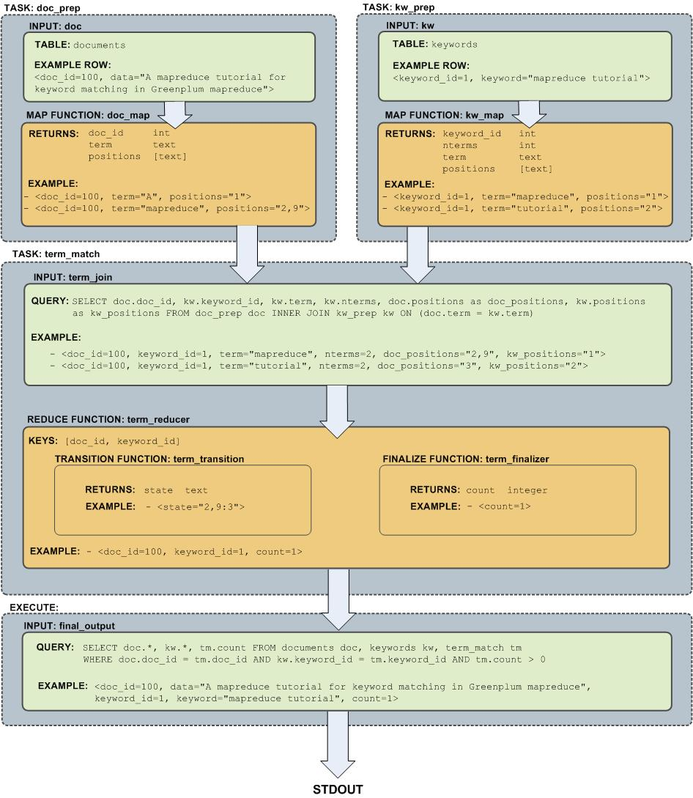

Using SynxDB MapReduce
MapReduce is a programming model developed by Google for processing and generating large data sets on an array of commodity servers. SynxDB MapReduce allows programmers who are familiar with the MapReduce model to write map and reduce functions and submit them to the SynxDB parallel engine for processing.
You configure a SynxDB MapReduce job via a YAML-formatted configuration file, then pass the file to the SynxDB MapReduce program, gpmapreduce, for execution by the SynxDB parallel engine. The SynxDB system distributes the input data, runs the program across a set of machines, handles machine failures, and manages the required inter-machine communication.
Refer to gpmapreduce for details about running the SynxDB MapReduce program.
About the SynxDB MapReduce Configuration File
This section explains some basics of the SynxDB MapReduce configuration file format to help you get started creating your own SynxDB MapReduce configuration files. SynxDB uses the YAML 1.1 document format and then implements its own schema for defining the various steps of a MapReduce job.
All SynxDB MapReduce configuration files must first declare the version of the YAML specification they are using. After that, three dashes (---) denote the start of a document, and three dots (...) indicate the end of a document without starting a new one. (A document in this context is equivalent to a MapReduce job.) Comment lines are prefixed with a pound symbol (#). You can declare multiple SynxDB MapReduce documents/jobs in the same file:
%YAML 1.1
---
# Begin Document 1
# ...
---
# Begin Document 2
# ...
Within a SynxDB MapReduce document, there are three basic types of data structures or nodes: scalars, sequences and mappings.
A scalar is a basic string of text indented by a space. If you have a scalar input that spans multiple lines, a preceding pipe ( | ) denotes a literal style, where all line breaks are significant. Alternatively, a preceding angle bracket ( > ) folds a single line break to a space for subsequent lines that have the same indentation level. If a string contains characters that have reserved meaning, the string must be quoted or the special character must be escaped with a backslash ( \ ).
# Read each new line literally
somekey: | this value contains two lines
and each line is read literally
# Treat each new line as a space
anotherkey: >
this value contains two lines
but is treated as one continuous line
# This quoted string contains a special character
ThirdKey: "This is a string: not a mapping"
A sequence is a list with each entry in the list on its own line denoted by a dash and a space (-). Alternatively, you can specify an inline sequence as a comma-separated list within square brackets. A sequence provides a set of data and gives it an order. When you load a list into the SynxDB MapReduce program, the order is kept.
# list sequence
- this
- is
- a list
- with
- five scalar values
# inline sequence
[this, is, a list, with, five scalar values]
A mapping is used to pair up data values with identifiers called keys. Mappings use a colon and space (:) for each key: value pair, or can also be specified inline as a comma-separated list within curly braces. The key is used as an index for retrieving data from a mapping.
# a mapping of items
title: War and Peace
author: Leo Tolstoy
date: 1865
# same mapping written inline
{title: War and Peace, author: Leo Tolstoy, date: 1865}
Keys are used to associate meta information with each node and specify the expected node type (scalar, sequence or mapping).
The SynxDB MapReduce program processes the nodes of a document in order and uses indentation (spaces) to determine the document hierarchy and the relationships of the nodes to one another. The use of white space is significant. White space should not be used simply for formatting purposes, and tabs should not be used at all.
Refer to gpmapreduce.yaml for detailed information about the SynxDB MapReduce configuration file format and the keys and values supported.
Example SynxDB MapReduce Job
In this example, you create a MapReduce job that processes text documents and reports on the number of occurrences of certain keywords in each document. The documents and keywords are stored in separate SynxDB tables that you create as part of the exercise.
This example MapReduce job utilizes the untrusted plpythonu language; as such, you must run the job as a user with SynxDB administrative privileges.
-
Log in to the SynxDB master host as the
gpadminadministrative user and set up your environment. For example:$ ssh gpadmin@<gpmaster> gpadmin@gpmaster$ . /usr/local/synxdb/synxdb_path.sh -
Create a new database for the MapReduce example: For example:
gpadmin@gpmaster$ createdb mapredex_db -
Start the
psqlsubsystem, connecting to the new database:gpadmin@gpmaster$ psql -d mapredex_db -
Register the PL/Python language in the database. For example:
mapredex_db=> CREATE EXTENSION plpythonu; -
Create the
documentstable and add some data to the table. For example:CREATE TABLE documents (doc_id int, url text, data text); INSERT INTO documents VALUES (1, 'http:/url/1', 'this is one document in the corpus'); INSERT INTO documents VALUES (2, 'http:/url/2', 'i am the second document in the corpus'); INSERT INTO documents VALUES (3, 'http:/url/3', 'being third never really bothered me until now'); INSERT INTO documents VALUES (4, 'http:/url/4', 'the document before me is the third document'); -
Create the
keywordstable and add some data to the table. For example:CREATE TABLE keywords (keyword_id int, keyword text); INSERT INTO keywords VALUES (1, 'the'); INSERT INTO keywords VALUES (2, 'document'); INSERT INTO keywords VALUES (3, 'me'); INSERT INTO keywords VALUES (4, 'being'); INSERT INTO keywords VALUES (5, 'now'); INSERT INTO keywords VALUES (6, 'corpus'); INSERT INTO keywords VALUES (7, 'is'); INSERT INTO keywords VALUES (8, 'third'); -
Construct the MapReduce YAML configuration file. For example, open a file named
mymrjob.yamlin the editor of your choice and copy/paste the following large text block:# This example MapReduce job processes documents and looks for keywords in them. # It takes two database tables as input: # - documents (doc_id integer, url text, data text) # - keywords (keyword_id integer, keyword text)# # The documents data is searched for occurrences of keywords and returns results of # url, data and keyword (a keyword can be multiple words, such as "high performance # computing") %YAML 1.1 --- VERSION: 1.0.0.2 # Connect to SynxDB using this database and role DATABASE: mapredex_db USER: gpadmin # Begin definition section DEFINE: # Declare the input, which selects all columns and rows from the # 'documents' and 'keywords' tables. - INPUT: NAME: doc TABLE: documents - INPUT: NAME: kw TABLE: keywords # Define the map functions to extract terms from documents and keyword # This example simply splits on white space, but it would be possible # to make use of a python library like nltk (the natural language toolkit) # to perform more complex tokenization and word stemming. - MAP: NAME: doc_map LANGUAGE: python FUNCTION: | i = 0 # the index of a word within the document terms = {}# a hash of terms and their indexes within the document # Lower-case and split the text string on space for term in data.lower().split(): i = i + 1# increment i (the index) # Check for the term in the terms list: # if stem word already exists, append the i value to the array entry # corresponding to the term. This counts multiple occurrences of the word. # If stem word does not exist, add it to the dictionary with position i. # For example: # data: "a computer is a machine that manipulates data" # "a" [1, 4] # "computer" [2] # "machine" [3] # … if term in terms: terms[term] += ','+str(i) else: terms[term] = str(i) # Return multiple lines for each document. Each line consists of # the doc_id, a term and the positions in the data where the term appeared. # For example: # (doc_id => 100, term => "a", [1,4] # (doc_id => 100, term => "computer", [2] # … for term in terms: yield([doc_id, term, terms[term]]) OPTIMIZE: STRICT IMMUTABLE PARAMETERS: - doc_id integer - data text RETURNS: - doc_id integer - term text - positions text # The map function for keywords is almost identical to the one for documents # but it also counts of the number of terms in the keyword. - MAP: NAME: kw_map LANGUAGE: python FUNCTION: | i = 0 terms = {} for term in keyword.lower().split(): i = i + 1 if term in terms: terms[term] += ','+str(i) else: terms[term] = str(i) # output 4 values including i (the total count for term in terms): yield([keyword_id, i, term, terms[term]]) OPTIMIZE: STRICT IMMUTABLE PARAMETERS: - keyword_id integer - keyword text RETURNS: - keyword_id integer - nterms integer - term text - positions text # A TASK is an object that defines an entire INPUT/MAP/REDUCE stage # within a SynxDB MapReduce pipeline. It is like EXECUTION, but it is # run only when called as input to other processing stages. # Identify a task called 'doc_prep' which takes in the 'doc' INPUT defined earlier # and runs the 'doc_map' MAP function which returns doc_id, term, [term_position] - TASK: NAME: doc_prep SOURCE: doc MAP: doc_map # Identify a task called 'kw_prep' which takes in the 'kw' INPUT defined earlier # and runs the kw_map MAP function which returns kw_id, term, [term_position] - TASK: NAME: kw_prep SOURCE: kw MAP: kw_map # One advantage of SynxDB MapReduce is that MapReduce tasks can be # used as input to SQL operations and SQL can be used to process a MapReduce task. # This INPUT defines a SQL query that joins the output of the 'doc_prep' # TASK to that of the 'kw_prep' TASK. Matching terms are output to the 'candidate' # list (any keyword that shares at least one term with the document). - INPUT: NAME: term_join QUERY: | SELECT doc.doc_id, kw.keyword_id, kw.term, kw.nterms, doc.positions as doc_positions, kw.positions as kw_positions FROM doc_prep doc INNER JOIN kw_prep kw ON (doc.term = kw.term) # In SynxDB MapReduce, a REDUCE function is comprised of one or more functions. # A REDUCE has an initial 'state' variable defined for each grouping key. that is # A TRANSITION function adjusts the state for every value in a key grouping. # If present, an optional CONSOLIDATE function combines multiple # 'state' variables. This allows the TRANSITION function to be run locally at # the segment-level and only redistribute the accumulated 'state' over # the network. If present, an optional FINALIZE function can be used to perform # final computation on a state and emit one or more rows of output from the state. # # This REDUCE function is called 'term_reducer' with a TRANSITION function # called 'term_transition' and a FINALIZE function called 'term_finalizer' - REDUCE: NAME: term_reducer TRANSITION: term_transition FINALIZE: term_finalizer - TRANSITION: NAME: term_transition LANGUAGE: python PARAMETERS: - state text - term text - nterms integer - doc_positions text - kw_positions text FUNCTION: | # 'state' has an initial value of '' and is a colon delimited set # of keyword positions. keyword positions are comma delimited sets of # integers. For example, '1,3,2:4:' # If there is an existing state, split it into the set of keyword positions # otherwise construct a set of 'nterms' keyword positions - all empty if state: kw_split = state.split(':') else: kw_split = [] for i in range(0,nterms): kw_split.append('') # 'kw_positions' is a comma delimited field of integers indicating what # position a single term occurs within a given keyword. # Splitting based on ',' converts the string into a python list. # add doc_positions for the current term for kw_p in kw_positions.split(','): kw_split[int(kw_p)-1] = doc_positions # This section takes each element in the 'kw_split' array and strings # them together placing a ':' in between each element from the array. # For example: for the keyword "computer software computer hardware", # the 'kw_split' array matched up to the document data of # "in the business of computer software software engineers" # would look like: ['5', '6,7', '5', ''] # and the outstate would look like: 5:6,7:5: outstate = kw_split[0] for s in kw_split[1:]: outstate = outstate + ':' + s return outstate - FINALIZE: NAME: term_finalizer LANGUAGE: python RETURNS: - count integer MODE: MULTI FUNCTION: | if not state: yield 0 kw_split = state.split(':') # This function does the following: # 1) Splits 'kw_split' on ':' # for example, 1,5,7:2,8 creates '1,5,7' and '2,8' # 2) For each group of positions in 'kw_split', splits the set on ',' # to create ['1','5','7'] from Set 0: 1,5,7 and # eventually ['2', '8'] from Set 1: 2,8 # 3) Checks for empty strings # 4) Adjusts the split sets by subtracting the position of the set # in the 'kw_split' array # ['1','5','7'] - 0 from each element = ['1','5','7'] # ['2', '8'] - 1 from each element = ['1', '7'] # 5) Resulting arrays after subtracting the offset in step 4 are # intersected and their overlapping values kept: # ['1','5','7'].intersect['1', '7'] = [1,7] # 6) Determines the length of the intersection, which is the number of # times that an entire keyword (with all its pieces) matches in the # document data. previous = None for i in range(0,len(kw_split)): isplit = kw_split[i].split(',') if any(map(lambda(x): x == '', isplit)): yield 0 adjusted = set(map(lambda(x): int(x)-i, isplit)) if (previous): previous = adjusted.intersection(previous) else: previous = adjusted # return the final count if previous: yield len(previous) # Define the 'term_match' task which is then run as part # of the 'final_output' query. It takes the INPUT 'term_join' defined # earlier and uses the REDUCE function 'term_reducer' defined earlier - TASK: NAME: term_match SOURCE: term_join REDUCE: term_reducer - INPUT: NAME: final_output QUERY: | SELECT doc.*, kw.*, tm.count FROM documents doc, keywords kw, term_match tm WHERE doc.doc_id = tm.doc_id AND kw.keyword_id = tm.keyword_id AND tm.count > 0 # Execute this MapReduce job and send output to STDOUT EXECUTE: - RUN: SOURCE: final_output TARGET: STDOUT -
Save the file and exit the editor.
-
Run the MapReduce job. For example:
gpadmin@gpmaster$ gpmapreduce -f mymrjob.yamlThe job displays the number of occurrences of each keyword in each document to
stdout.
Flow Diagram for MapReduce Example
The following diagram shows the job flow of the MapReduce job defined in the example:
